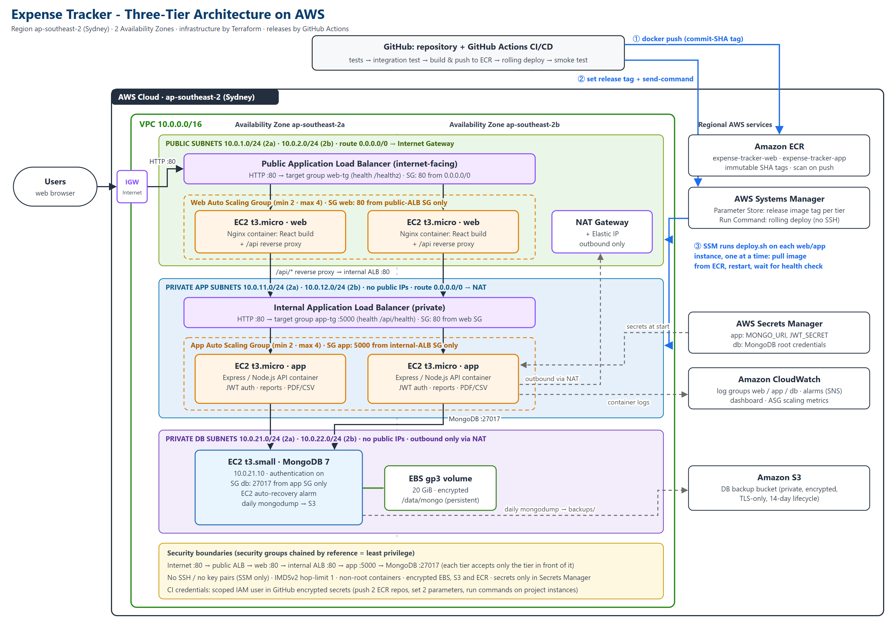

| Submitted by | Abdur Rafey (SE-23093) Murtazah Hussain (SE-23097) |
| Section | B |
| Cloud provider | Amazon Web Services (AWS), region ap-southeast-2 (Sydney) |
| Live application | http://expense-tracker-public-alb-1866684008.ap-southeast-2.elb.amazonaws.com |
| Source repository | https://github.com/abdurrafey250904-hash/Expense-Tracker |
| CI/CD | GitHub Actions (.github/workflows/ci-cd.yml) |
| Infrastructure as Code | Terraform (infra/terraform/) |
| Accompanying documents | Appendix A - Deployment Evidence (separate PDF) Source code and evidence (ZIP) |
| Date | November 2026 |
The application is a full-stack Personal Expense Tracker (MERN stack): users register and log in (JWT), record categorized expenses, set monthly and per-category budgets with alerts, view charts and monthly reports, and export reports as PDF/CSV. It is naturally a three-tier application: a React single-page application (presentation tier), an Express/Node.js REST API (application/business-logic tier) and MongoDB (data tier). This report describes how it was containerized, deployed on AWS across public and private network tiers, and automated with a CI/CD pipeline, and justifies the design against the required non-functional requirements (NFRs).
Why AWS. AWS was selected because (i) it offers every building block the brief asks for as first-class managed services — VPC, NAT Gateway, Application Load Balancers with target groups, EC2 Auto Scaling Groups, Elastic Container Registry, Secrets Manager, Systems Manager, S3, EBS and CloudWatch; (ii) its Free plan ($100 credits, free-tier-eligible t3.micro/t3.small instances) allowed a realistic multi-AZ deployment at no personal cost; (iii) Terraform's AWS provider and GitHub Actions' official AWS actions are mature, enabling a fully reproducible infrastructure-as-code and CI/CD workflow; and (iv) it is the most widely used provider in industry, so the skills transfer directly.

Architecture-Diagram.png.Request path. Browser → public Application Load Balancer (internet-facing, public subnets) → web tier (Nginx container serving the React build) → for /api/* Nginx reverse-proxies to the internal ALB (private subnets, not internet-reachable) → application tier (Express container) → MongoDB on a dedicated host in the private DB subnet.
| Component | Configuration | Purpose |
|---|---|---|
| VPC | 10.0.0.0/16, DNS hostnames on, 2 AZs (ap-southeast-2a/2b) | Isolated private address space for all tiers |
| Public subnets | 10.0.1.0/24, 10.0.2.0/24 | Public ALB, NAT Gateway, web-tier instances |
| Private app subnets | 10.0.11.0/24, 10.0.12.0/24 | Internal ALB and application-tier instances (no public IPs) |
| Private DB subnets | 10.0.21.0/24, 10.0.22.0/24 | MongoDB host (no public IP) |
| Internet Gateway | attached to the VPC | Internet connectivity for public subnets |
| NAT Gateway | in public subnet 2a with an Elastic IP | Outbound-only internet for private hosts (image pulls, patches, Secrets Manager, S3) |
| Route tables | public: 0.0.0.0/0 → IGW; private-app and private-db: 0.0.0.0/0 → NAT | Private hosts can initiate outbound traffic but nothing can connect in |
/api on the same host; the web tier proxies it. The API is never exposed to the internet and no CORS surface is needed.| Tier / area | AWS service | Role in this deployment |
|---|---|---|
| Web tier | EC2 Auto Scaling Group expense-tracker-web-asg (t3.micro × 2-4), public ALB + target group web-tg | Runs the expense-tracker-web container (unprivileged Nginx + React build) on port 80; ALB health check /healthz |
| Application tier | EC2 Auto Scaling Group expense-tracker-app-asg (t3.micro × 2-4), internal ALB + target group app-tg | Runs the expense-tracker-app container (Express API, port 5000); health check /api/health reports DB state and release version |
| Data tier | EC2 expense-tracker-mongodb (t3.small, fixed IP 10.0.21.10), EBS gp3 20 GiB encrypted data volume, S3 backup bucket | MongoDB 7 container with authentication; data on a separate persistent volume; daily compressed mongodump to S3 (14-day lifecycle) |
| Registry | Amazon ECR (2 private repositories) | Stores web and app images; immutable SHA tags, scan-on-push, keep-last-10 lifecycle policy |
| Secrets | AWS Secrets Manager (expense-tracker/app, expense-tracker/db) | Generated DB credentials, connection string and JWT secret injected at container start |
| Deployment | SSM Parameter Store, SSM Run Command | Release tag per tier; rolling, SSH-less deploys from the pipeline |
| Monitoring | CloudWatch Logs, Alarms, Dashboard, SNS; EC2 auto-recovery | Container logs per tier, 5xx/unhealthy-host/CPU alarms, dashboard, automatic recovery of the DB host |
| Identity | IAM roles per tier, CI IAM user | Least-privilege access for each tier and for the pipeline |
| Automation | Terraform, GitHub Actions | Infrastructure as code; build-test-deploy pipeline |
frontend/Dockerfile): multi-stage — stage 1 builds the React app with Vite on node:20-alpine; stage 2 copies only the static files into nginx-unprivileged:1.27-alpine (non-root, port 8080). The Nginx config is a template whose API upstream and DNS resolver are injected per environment, and adds SPA routing, gzip, long-term asset caching, security headers and a /healthz endpoint.backend/Dockerfile): multi-stage — production-only dependencies installed with npm ci --omit=dev, runs as the non-root node user, with a Docker HEALTHCHECK. The backend was refactored into app.js/server.js for testability and graceful SIGTERM shutdown..dockerignore files keep node_modules, tests and any .env secrets out of the images.| # | Job | What it does |
|---|---|---|
| 1 | Backend unit tests | npm ci && npm test (Node test runner + Supertest: health, 404, auth guard) |
| 2 | Frontend build | Compiles the React app to catch build errors |
| 3 | Terraform fmt & validate | Rejects malformed infrastructure code |
| 4 | Integration test | docker compose up --build --wait, then through Nginx: register a user → create an expense → list it; proves all three containers work together |
| 5-6 | Build & push (web, app) | Docker Buildx with layer cache; push to ECR tagged with the commit SHA |
| 7 | Rolling deploy | Publishes the SHA to SSM, then runs the deploy script on each in-service instance one at a time via SSM Run Command (app tier first, then web) and waits for each container to pass its health check; finally smoke-tests the public URL until /api/health returns the new SHA and db: connected |
Jobs 1-4 run on every push and pull request; jobs 5-7 run only on main. Concurrency control prevents overlapping deployments, and documentation-only commits skip the pipeline. Because each release is an immutable SHA-tagged image, rolling back means re-running the pipeline for an earlier commit.
| Control | Implementation and justification |
|---|---|
| Security groups per tier (least privilege) | Five security groups chained by security-group references, not IP ranges: public ALB ← internet :80; web ← public-ALB SG :80; internal ALB ← web SG :80; app ← internal-ALB SG :5000; MongoDB ← app SG :27017. Each tier accepts traffic only from the tier directly in front of it. |
| Network segmentation | Separate public, private-app and private-DB subnets. App and DB hosts have no public IP and reach the internet only outbound through NAT. The internal ALB has no public address (resolves to 10.0.x.x only). |
| Secrets management | DB password and JWT secret are generated by Terraform and stored only in Secrets Manager; containers receive them at start into chmod 600 env files. Nothing is hard-coded in code or images; .env, *.tfvars and Terraform state are git-ignored. |
| CI/CD secrets | The pipeline authenticates with a dedicated IAM user whose key is stored as GitHub encrypted secrets (created and piped directly into GitHub, never displayed). Its policy only allows pushing to the two ECR repositories, updating the two release parameters and sending commands to instances tagged Project=expense-tracker. |
| IAM least privilege | Per-tier instance roles: each can pull only its own image, read only its own release tag and write only its own log group; only the app role may read the app secret; the DB role may only write to backups/ in its bucket. |
| Encryption | All EBS volumes (including DB data) encrypted at rest; S3 backups encrypted with public access blocked and a TLS-only bucket policy; ECR encrypted (AES-256). |
| Host and container hardening | No SSH or key pairs; IMDSv2 required with hop limit 1, so containers cannot obtain instance-role credentials; web and app containers run as non-root; MongoDB authentication enforced. |
| Supply chain | Immutable image tags, ECR scan-on-push, and tests + integration test gating every deployment. |
Verified from the internet (evidence file 10-security-and-backup-tests.txt): the public ALB returns HTTP 200; a direct request to a web instance's public IP times out (blocked by its SG); the internal ALB resolves only to private addresses; the app and DB instances have no public IP.
| Test | Result |
|---|---|
| Backend unit tests (4 tests: health, 404, missing token, invalid token) | 4/4 passed (locally and in CI) |
| Integration test: three containers via docker compose (register → add expense → list through Nginx) | Passed in every pipeline run |
Pipeline runs on main (runs #2, #3, #4) | All 7 jobs green; rolling deploy ~55 s; total ~2.5 min per run |
| Rolling deployment | Each instance reported "Healthy: <ECR image>:<SHA>" before the next was updated; site stayed available |
| Post-deploy smoke test through the public ALB | /api/health → {"status":"ok","db":"connected","version":"db62666..."} |
| Load balancer target health | web-tg 2/2 healthy, app-tg 2/2 healthy; both ASGs "At desired capacity" |
| Database persistence and backup | Data survives redeploys; manual mongodump uploaded to S3 (backups/*.archive.gz) |
| End-to-end in a browser | Registration, expenses, dashboard charts, reports and budget alerts work (Appendix A, Figures A21-A26) |
Issue found and fixed by the pipeline. The very first run failed only at the web-tier deploy step: the Auto Scaling Group had just replaced an instance that was not yet registered with Systems Manager. The deploy script was changed to skip still-booting instances (they self-deploy from the published tag at boot) and the CI user was granted ssm:DescribeInstanceInformation; every subsequent run has been fully green. This demonstrates the self-healing release-pointer design. The successful pipeline run is shown in Figure A20 of Appendix A (submitted as a separate document).
| NFR | Design / implementation decisions that support it | Known limitations and improvements |
|---|---|---|
| Scalability | Stateless containers (JWT, no server sessions) behind load balancers; web and app tiers scale horizontally and independently in their own ASGs (2→4 instances); the DB tier is isolated so it can be scaled separately. | Max 4 per tier to protect free credits (one variable to raise). Database scales vertically only → a MongoDB replica set / sharding or a managed cluster would scale reads and writes. |
| Availability / Reliability | Web and app tiers span two AZs with at least two instances each; ELB health checks make the ASGs replace failed instances automatically; Docker restart policies; DB host has EC2 auto-recovery, data on a separate EBS volume and daily S3 backups. | Single DB instance in one AZ is the main single point of failure → 3-node replica set across AZs or DocumentDB (blocked on this account). Single NAT Gateway → one per AZ. |
| Elasticity | Target-tracking policies scale out and back in automatically: average CPU 50 % (both tiers) and 1,000 ALB requests per target (web tier). | Scale-out takes ~2-3 min (boot + image pull); a pre-baked AMI or Fargate would react faster. |
| Security | Section 5: SG chaining, private subnets, least-privilege IAM, Secrets Manager, encryption at rest, IMDSv2, no SSH, scanned immutable images, scoped CI credentials. | HTTP only (no domain for an ACM certificate) → Route 53 + ACM + HTTPS listener and AWS WAF. App→DB traffic is VPC-internal but not TLS. CI uses an access key because OIDC is blocked. |
| Maintainability / Deployability | All infrastructure in Terraform; every push runs tests, an integration test, image build, rolling deploy and smoke test automatically; releases are SHA-tagged and roll back by redeploying an older commit; zero manual server access. | Terraform is applied manually with local state → move state to S3 + DynamoDB locking and add a plan/apply stage to the pipeline. |
| Performance / Latency | Nginx serves static assets with gzip and one-year immutable caching; load is spread by ALBs; all tiers are in one region and VPC; gp3 storage for the DB; MongoDB indexes on user+date and user+category. | Add CloudFront in front of the web tier for global users and a cache (ElastiCache) for report aggregations. |
| Cost-Efficiency | Free-tier-eligible t3.micro/t3.small instances; ASGs idle at the minimum of 2; a self-managed DB instead of a ~$70/month managed cluster; one NAT Gateway; ECR lifecycle and 14-day log retention; whole stack destroyable with one command. | See Section 8 for further measures. |
| Portability | All three tiers are standard Docker images (nginx-unprivileged, node, mongo:7) configured only through environment variables; the same images run locally with docker compose, on EC2 here, and could run unchanged on ECS, EKS, AKS or GKE; switching to Atlas or DocumentDB only changes MONGO_URI. | Terraform code is AWS-specific and would need rewriting for another provider. |
| Service | Configuration (ap-southeast-2, on-demand) | ≈ USD / month |
|---|---|---|
| EC2 (web + app) | 4 × t3.micro, 730 h | 38.50 |
| EBS | 4 × 10 GB gp3 root volumes | 3.85 |
| Application Load Balancers | 2 ALBs (public + internal), low LCU usage | 48.00 |
| NAT Gateway | 1 × 730 h + ~5 GB processed | 43.40 |
| Public IPv4 addresses | NAT EIP + 2 web instances + 2 ALB nodes | 18.25 |
| Database host | 1 × t3.small + 10 GB root + 20 GB data gp3 | 22.50 |
| S3, ECR, Secrets Manager, CloudWatch, SNS, SSM | backups < 1 GB, 2 secrets, logs/alarms/dashboard | 6.05 |
| Total | ≈ 180 / month (≈ 6 / day) | |
The deployment runs on AWS Free-plan credits ($100), so the evaluation period costs nothing out of pocket. Figures are on-demand estimates and should be confirmed with the AWS Pricing Calculator.
Cost optimization measures:
terraform destroy when idle.The Expense Tracker was successfully containerized and deployed on AWS as a secure three-tier architecture: a public web tier and a private application tier, each in its own Auto Scaling Group behind its own load balancer across two Availability Zones, and an isolated, authenticated, encrypted and backed-up database tier. Container images are stored in Amazon ECR, and a GitHub Actions pipeline tests, builds, pushes and performs zero-SSH rolling deployments on every change, verified by an automatic smoke test. Five cloud-native enhancements were implemented (S3 object storage, persistent EBS block storage, CloudWatch logging and monitoring, Terraform infrastructure as code and a cost estimate). The main remaining limitations — a single-instance database, HTTP-only access and key-based CI credentials — are consequences of the Free-plan account restrictions and are documented above with concrete improvements.
Appendix A (deployment evidence screenshots) is submitted as a separate PDF: CEA-Appendix-A-Deployment-Evidence.pdf.
Repository: https://github.com/abdurrafey250904-hash/Expense-Tracker
| File | Purpose |
|---|---|
frontend/Dockerfile | Web-tier image (Vite build → unprivileged Nginx) |
frontend/nginx/default.conf.template | Nginx: SPA routing, /healthz, security headers, /api reverse proxy |
backend/Dockerfile | Application-tier image (Express API, non-root, health check) |
docker-compose.yml | Local / CI orchestration of web, app and MongoDB |
.github/workflows/ci-cd.yml | CI/CD pipeline definition |
.github/scripts/rolling-deploy.sh | Rolling deployment through SSM Run Command |
infra/terraform/*.tf | Infrastructure as code: VPC, security groups, ALBs, ASGs, database, ECR, IAM, secrets, monitoring |
infra/terraform/user_data*.sh.tftpl | Instance bootstrap: Docker, deploy service, MongoDB volume and backups |
backend/tests/app.test.js | Unit tests run by the pipeline |
scripts/collect-evidence.sh | Exports AWS CLI evidence to docs/evidence/ |
DEPLOYMENT.md | Step-by-step deployment log with one-line explanations |
Kubernetes manifests are not applicable: the Kubernetes enhancement was not selected (the brief requires at least one enhancement; five others were implemented).